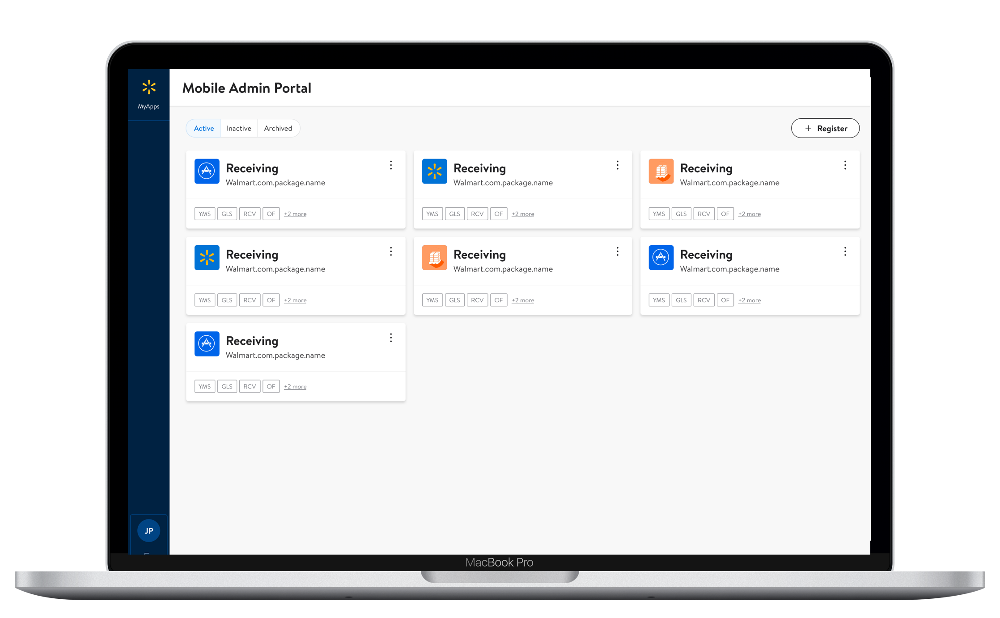
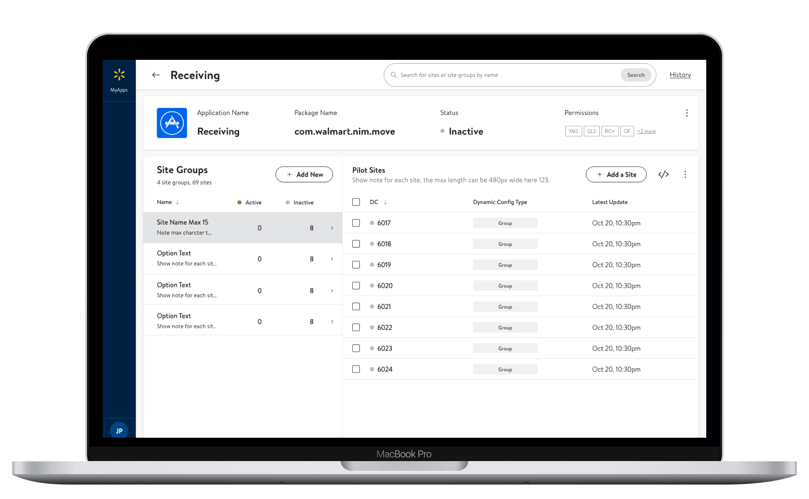
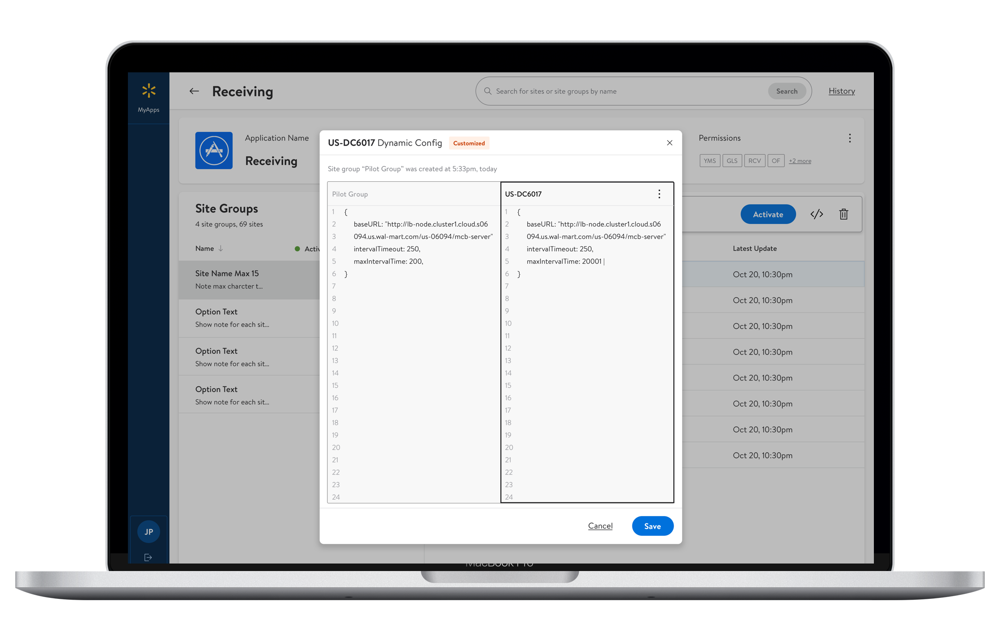
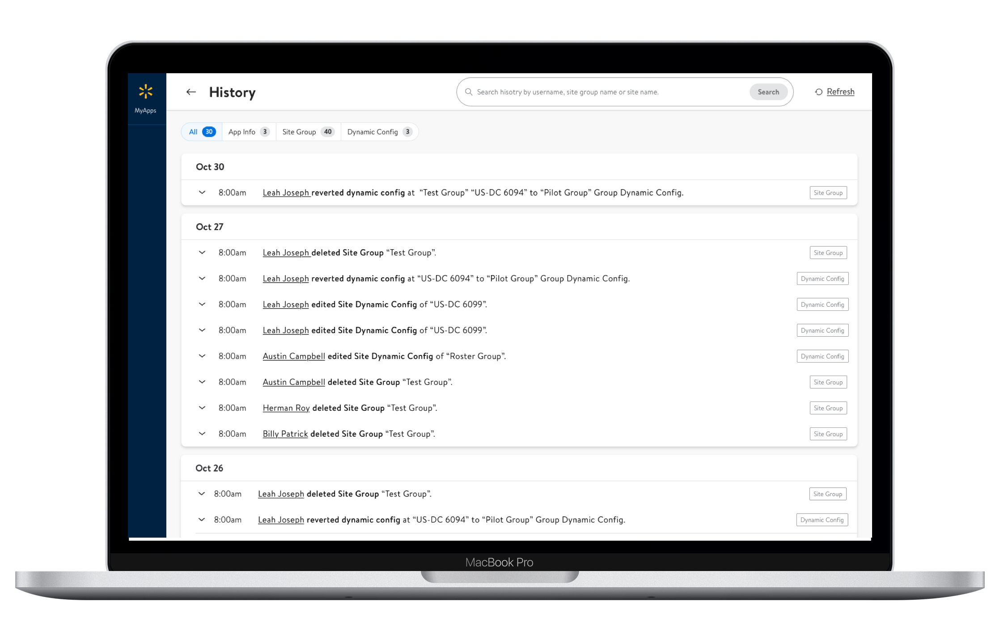

I led the ux design process and solved the business problem through an intuitive and user-friendly platform design. I strategically planned the work, aligned with product team and figured out key user flows according to a user journey map. Several flows were simplified based on user feedback. I shared my design progress with stakeholders every week to build bridges among business, product, design and development. I advocated and negotiated for the best ux practice even when there were conflicts.
In our final user review session, 10+ participants gave very positive feedback, and there was a lot more buy-in from end users, compared to the mid-fi version. Business and design leadership gave green light to the design, which was then handed off with detailed specs. Frontend and backend team were very aligned to the solution, and had very clear mind about flow details.
This platform will be the very first single-signon admin platform for supply chain developers at Walmart. This solution will enable transparent communication for end users, bring clear visibility to all stakeholders, and is part of the transition to an omni-channel supply chain business. The enhanced development quality will guarantee millions of dollars freight shipped to stores ontime from every distribution center.
When a new developer signs in this platform, he will have access to all the applications available to their team. These projects are sorted by activation status for clear visibility.
Distribution centers in one site group will share the same group config. Users could instantly know activation info from the master table, and config status from the child table.
Developers could make changes to key pairs and values to a site group or a site. This allows the platform to be scaleable and flexible. A side-by-side view is provided to bring confidence when editing.
This allows developers to keep track of the team progress, diagnose problems and share thoughts. This allows the platform to be the single place of truth for accountability. In the future, this page has the potential to become a version control center for best development experience.
Low-Fi and Mid-Fi
When we delete it, are we able to retrieve the previous package?
It is hard to read site number.
Is there a way I could copy group value?
from End Users
What does the card mean, inactivated?
Some groups may not have key pairs.
Are these apps displayed alphabetically?
from MyApps Product Team
High-Fi
The app is simple and self-explanatory. I would love to use it for myself.
Will I be able to revert back to history versions, or is it view only?
from End Users
Great work! Navigation and understanding the flow looks great! Thanks a lot.
Really great work! We can’t express how thankful we are for your work!
from MyApps Product Team
Step 1
This was a tech-lead project where a developer was the PM. I overcame my learning curve through a journey map workshop. This helped me to be clear on project goal and picked up the end-user mindset. The product team was excited to see I catch up with them very fast and always talked from users’ perspective.
Step 2
Through user research, I discovered that participants had huge mental barrier to complete the setup. Users relies on other external resources to complete the setup. Users rarely have all the info needed at the very begining of their project. Thus I broke down main task into 5 small tasks to increase the setup completion rate.
Step 3
When editing config, participants mentioned it was confusing and time-consuming, comparing to their experience on other code editor apps. As this is a core step in our service, I created new design which allow users leverage on their past experience. This effort led to an improved user feedback, where participants mentioned that this was their favorite function.
Step 4
As I was informed to reskin this platform for the new official version of associate-facing design system, I kept track of component instances through a sub design-system. This helped the platform built reusable UI code components, which can be easily reskinned.
lunaatlgt@gmail.com
(404) 476-1819